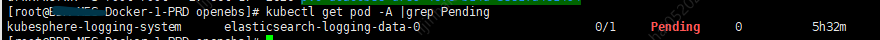
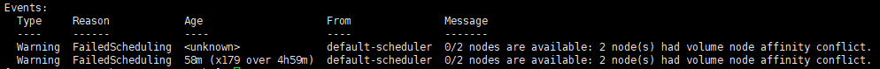
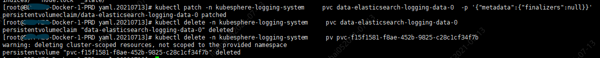

问题描述
openebs作为Kubernetes持久层使用的时候，数据只会存在Kubernetes集群中某个节点中，节点间的数据不会自动共享，这也是导致Kubesphere官方说openebs建议不在生产环境下使用的原因。
这种情况下，如果某个Node节点从集群中移除后，该Node节点中的数据就需要手动同步到其他节点中。
现象发现
1. Node节点移除后，某pod一直处于Pending状态
1 | kubectl get pod -A |grep Pending |
结果截图

2. 查看pod的describe信息
1 | kubectl describe pod [pending-pod-name] -n [pending-pod-namespace] |
结果截图

结果表明：该POD有Node节点亲和性（affinity）问题。
3. 查看pod的yaml文件内容
1 | kubectl get pod [pending-pod-name] -n [pending-pod-namespace] -oyaml |
进一步分析：本身POD是没有进行亲和性（affinity）配置的，那么和POD有关的额外资源，就是持久层资源（pvc、pv）
4. 查看对应持久层资源（pvc、pv）
1 | kubectl get pvc [pvc-name] -n [pending-pod-namespace] -oyaml |
5. 最后能发现，openebs的pv是需要指定Node节点亲和性的
而如果对应的Node节点被移除了，那么自然这个pv肯定是运行失败了
1 | # 例子 |
解决思路
问题找到了，那么就有了解决思路：
- 把已移除节点中旧PV已存储的数据内容迁移到集群中尚存在的的某节点对应目录上
- 保存PVC、PV的yaml文件
- 删除掉PVC和PV
- 修改PV的节点亲和性
- 重新部署PVC和PV
解决流程
把已移除节点中旧PV已存储的数据（目录/var/openebs/local/）迁移到Master节点上（目录：/var/openebs/local/）
过程略
保存PVC、PV的yaml文件
1 | kubectl get -n [namespace] pvc [pvc-name] -oyaml > pvc.yaml |
删除PVC和PV
默认情况下，PVC和PV被正在使用是不能直接删除的，删除会一直使PV处于Terminating状态，所以先给PVC加一个元数据，载进行删除
1 | kubectl patch -n [namespace] pvc [pvc-name] -p '{"metadata":{"finalizers":null}}' |
结果截图

修改PV的节点亲和性和删掉和PVC的关联信息
1 | # 修改pv.yaml |
重新部署PVC和PV
1 | kubectl create -f pv.yaml |
(•̀ᴗ•́)و ̑̑